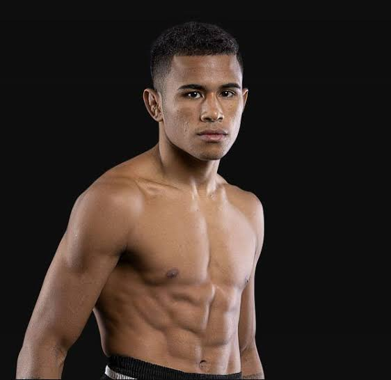

WALTER GONCALVES
Walter Gonçalves (nacido el 1 de junio de 1998) es un kickboxer profesional brasileño de Muay
Thai y artista marcial mixto que compite en las divisiones de peso gallo y mosca, conocido por su
estilo agresivo de golpeo y su destreza para nocaut.
